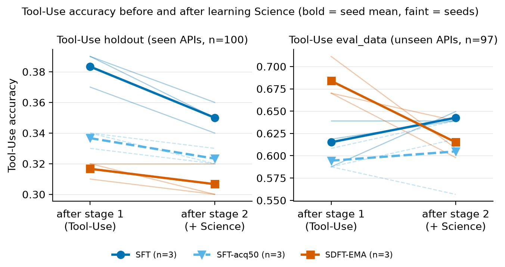
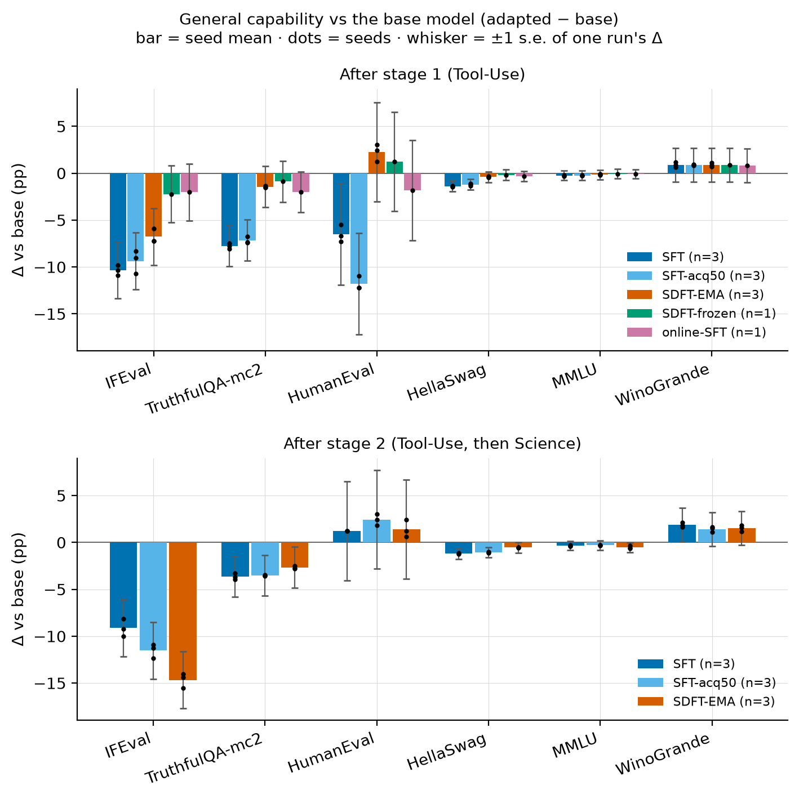

Self-Distillation Fine-Tuning under LoRA
A controlled replication of SDFT's forgetting claims on Qwen2.5-7B-Instruct with rank-16 LoRA: two tasks learned in sequence, three seeds.
Task forgetting. On APIs seen in training, SDFT loses less first-task accuracy than SFT while learning the second task (−1.0 vs −3.3 percentage points), but the gap is not significant (p = 0.30) and SDFT had also learned less. Both lose about 11% of the items they answered correctly after stage 1, and SFT stopped early at a similar accuracy loses about as much (−1.3 pp). On APIs never seen in training the order reverses: SDFT −6.9 pp, SFT +2.7 pp.
General capabilities. After the first task SDFT protects them, on every seed: SFT costs 10.4 pp of instruction following (IFEval) and 7.8 pp of truthfulness (TruthfulQA), SDFT 6.8 and 1.5 pp. After the second task the protection is gone: SDFT ends at −14.7 pp on IFEval against −9.1 pp for SFT, and its TruthfulQA edge shrinks to 1 pp. SDFT needs 3.2× the training compute.
Setup
- Model. Qwen2.5-7B-Instruct with LoRA (rank 16, α 32, all attention and MLP projections). Learning rate 1e-4 (cosine), 2 epochs per stage, batch 32. Seeds 42, 1234, 2024.
- Protocol. Stage 1 trains Tool-Use (3,946 examples); stage 2 continues the same adapter on Science (2,674 examples).
- Arms. SFT: cross-entropy on the dataset's answers. SDFT-EMA: the model generates its own answers and is trained (forward KL) to match a teacher that sees a demonstration in context; the teacher is an EMA of the model. SFT-acq50, the accuracy-matched control: SFT's earliest saved checkpoint (step 50 of 248, 0.4 epochs), the one closest to SDFT's stage-1 holdout accuracy (0.34 vs 0.32), then trained on stage 2 like the others.
- Retention is measured on two Tool-Use sets: holdout (100 items whose APIs all appear in training) and eval_data (97 items on 10 APIs never seen in training). Strict exact-match scoring, greedy decoding.
- General capability is measured with six lm-eval tasks (0-shot, no chat template) after each stage, compared with the base model.
1. The retention gap has the paper's sign but is not significant
| Tool-Use holdout | After stage 1 | After stage 2 | BWT | Forgot | Gained |
|---|---|---|---|---|---|
| SFT | 0.383 | 0.350 | −3.3 pp | 11.3% (13/115) | 1.6% (3/185) |
| SFT-acq50 | 0.337 | 0.323 | −1.3 pp | 12.9% (13/101) | 4.5% (9/199) |
| SDFT-EMA | 0.317 | 0.307 | −1.0 pp | 10.5% (10/95) | 3.4% (7/205) |
Means over 3 seeds. BWT (backward transfer) = accuracy after stage 2 − accuracy after stage 1. Forgot: share of items right after stage 1 and wrong after stage 2; gained: the reverse. Both are pooled over seeds.
- SDFT's BWT beats SFT's on all three seeds, by 2.3 pp on average. That is the direction the paper reports, but the gap is 7 of 300 item evaluations, and the pre-registered test does not find it significant (seed-blocked paired permutation, p = 0.30).
- The two methods lose items they got right after stage 1 at similar rates (11.3% vs 10.5%). More of the gap (4 of 7 items) comes from SDFT gaining previously missed items during stage 2.
- SFT stopped early at a similar accuracy (0.34 vs 0.32) has about the same BWT as SDFT (−1.3 vs −1.0 pp). With 100 items per set, this cannot rule out differences of a few points either way.
2. BWT tracks where an arm started

On APIs never seen in training the order reverses. SDFT starts highest and loses 6.9 pp (on all three seeds), while SFT gains 2.7 pp. After stage 2 the arms sit close together, at 0.60–0.64 from a starting spread of 0.59–0.68, so endpoint BWT largely reflects where an arm started. Before reading BWT as a method effect, split it into forgotten and gained items and compare against an accuracy-matched control.
3. General capabilities: protected after the first task, not after the second

| After stage 1 | After stage 2 | ||||||
|---|---|---|---|---|---|---|---|
| Change vs base (pp) | SFT | acq50 | SDFT | SFT | acq50 | SDFT | Base model |
| IFEval (prompt, strict) | −10.4 | −9.4 | −6.8 | −9.1 | −11.5 | −14.7 | 56.2 |
| TruthfulQA (mc2) | −7.8 | −7.2 | −1.5 | −3.6 | −3.5 | −2.7 | 64.7 |
| HumanEval (pass@1) | −6.5 | −11.8 | +2.2 | +1.2 | +2.4 | +1.4 | 64.0 |
| HellaSwag | −1.4 | −1.2 | −0.4 | −1.2 | −1.1 | −0.5 | 80.5 |
| MMLU | −0.2 | −0.2 | −0.2 | −0.3 | −0.3 | −0.5 | 71.7 |
| WinoGrande | +0.9 | +0.9 | +0.9 | +1.9 | +1.4 | +1.5 | 70.9 |
Mean of 3 seeds, lm-eval 0.4.9.1, 0-shot, default prompts (no chat template). Per-seed values are in SUMMARY.md.
After the first task, SFT damages instruction following and truthfulness, while MMLU, HellaSwag and WinoGrande move by 1.4 pp or less. SDFT's damage is smaller on every task where SFT loses more than 1 pp. The acq50 checkpoint trained for only 0.4 epochs, and its weight update is only 8% larger than SDFT's (Frobenius norm of the LoRA update, ‖ΔW‖F: 5.10 vs 4.71), yet it is damaged about as much as full SFT. At this point the difference points to SDFT's training signal, matching the model's own demonstration-conditioned predictions instead of the dataset's tokens, not from learning less of the task or a smaller weight update.
Learning Science changes the picture. SFT partly recovers, while SDFT's instruction following gets worse: on IFEval every SDFT seed ends below every SFT and acq50 seed. Its TruthfulQA edge shrinks from 6.3 to 1 pp and HumanEval ends level. In this two-task sequence, SDFT's protection of general capabilities does not last to the end.
4. Overall score and cost
| After both stages | Science | Tool-Use kept | ACC | GPU-hours per seed |
|---|---|---|---|---|
| SFT | 0.573 | 0.350 | 0.461 | 0.80 |
| SFT-acq50 | 0.569 | 0.323 | 0.446 | – |
| SDFT-EMA | 0.552 | 0.307 | 0.429 | 2.59 |
| SFT on both tasks at once (1 seed) | 0.564 | 0.370 | 0.467 | 0.81 |
ACC = mean of Science accuracy and kept Tool-Use (holdout) accuracy. GPU-hours: training only, both stages, one H100 NVL. Training on both tasks at once is the usual upper bound for learning them in sequence.
On the standard continual-learning average, plain SFT scores highest (on 2 of 3 seeds) and comes within 0.6 pp of training on both tasks at once (0.461 vs 0.467), so with LoRA there is little task-level forgetting left for any method to remove. SDFT costs 3.2× SFT's training compute (about 22–23 vs 7 seconds per step).
Limitations
- Small, noisy retention sets: 97–100 items, and 51 of the 100 seen-API items are never solved by the base model or any trained checkpoint (3 of them also appear in the training data with a different label).
- One accuracy-matched control: a single SFT checkpoint (step 50, near the peak learning rate). All arms share one learning rate, not tuned per arm.
- General capability is measured without the chat template. The frozen-teacher and online-SFT ablations and the both-tasks-at-once run are single-seed.
- One model (Qwen2.5-7B-Instruct), one LoRA rank, two tasks, and the EMA is applied to the LoRA factors. Full fine-tuning, where the original paper reports its effect, was not tested.
Data and reproduction
analysis/SUMMARY.md: every result in readable tables, by arm, stage and seed.analysis/: the underlying tables (CSV), per-item statistics (final_stats.txt), update norms, figures.runs_export/: per-run records with per-item scores, final-checkpoint model outputs, lm-eval outputs and run configs.wandb_export/: training curves.RESULTS.md: which file each number comes from.
Rebuild the tables (all but the update norms, which need the adapter weights) and the figures from the committed records, on CPU in a couple of minutes:
python collect_results.py --root runs_export
python stats_final.py --root runs_export
python make_figures.py
python make_summary.py